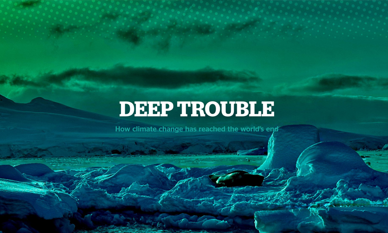
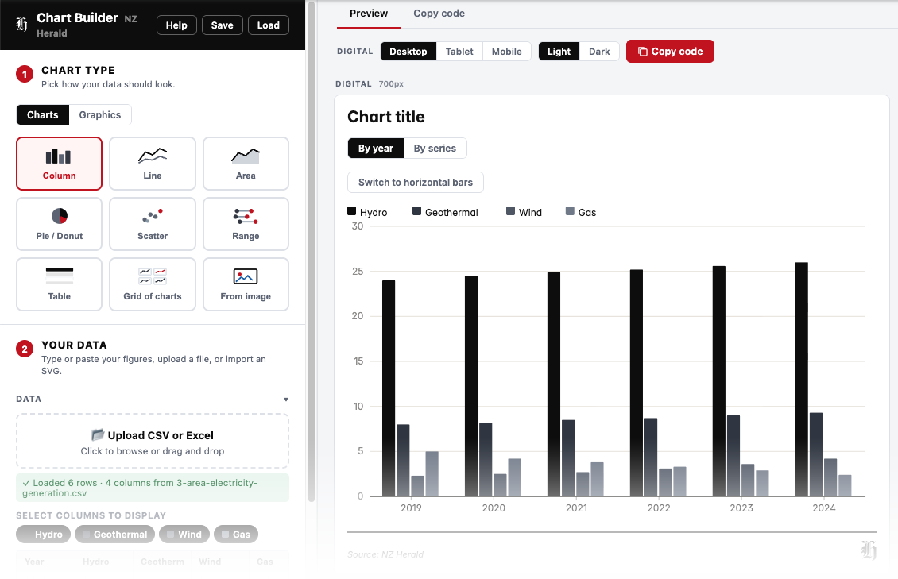
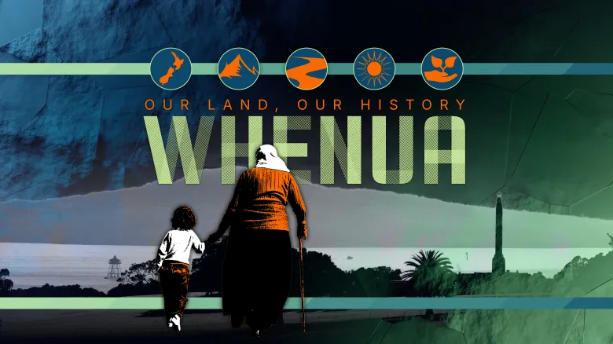
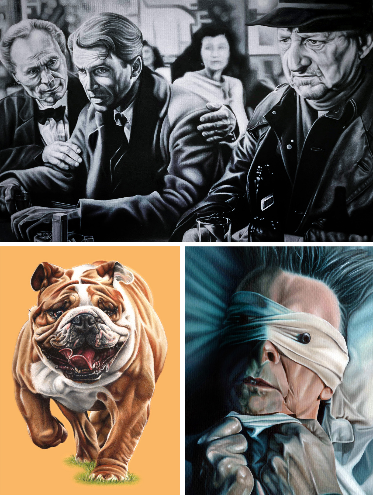

FOR EXAMPLE...

Paul Slater
I think by making
Turning complex ideas into engaging digital experiences
I think by making
Every project has to start somewhere, whether it’s a sketch on paper, a rough prototype, a quick animation or simply a conversation. I’ve learned that ideas become clearer once they exist in front of you. People ask better questions, spot opportunities sooner and often take the conversation somewhere unexpected.
Whether I’m designing an interactive, writing code, creating motion graphics or painting on canvas, making is how I think. Curiosity starts the process, but creating something tangible is what turns an idea into a better one.
I didn't set out to build a 3D model of Auckland because anyone asked me to. It started with a simple question. Could a city become a more engaging way to tell stories?
Rather than relying on static maps or screenshots, I wanted to create something people could explore. So I began modelling parts of Auckland in Blender, learning as I went, testing ideas, making mistakes and gradually building a tool that could support everything from news stories to interactive explainers.
Finding Better Ways
Some of the work I’m most proud of is almost invisible. It’s the workflow that saves time, the reusable tool that removes repetition or the small improvement that helps people do their best work.
I’ve always enjoyed spotting unnecessary complexity and finding practical ways to simplify it. The best solutions rarely draw attention to themselves. They simply help people do their best work.
FOR EXAMPLE...
Building Better Interactive Experiences

I've become increasingly interested in designing tools and experiences that solve real newsroom problems. Rather than simply creating graphics, I enjoy creating interactive products that make information easier to explore, understand and engage with.
An important part of that journey was embracing platforms such as Shorthand during the early growth of digital storytelling. Over several years I designed and produced hundreds of immersive long-form stories, combining layout, motion, photography, video and animation to create engaging editorial experiences. While working within the constraints of a publishing platform, I was constantly exploring new ways to present complex stories in a way that felt intuitive, accessible and compelling.
Alongside projects such as the Chart Generator and Image Compositor, this work reflects a shift in my career from creating individual graphics to designing reusable systems and digital experiences. It also reinforced a philosophy that continues to shape my work today: the technology is simply the tool. The goal is always to create clearer, more engaging ways for audiences to discover, understand and interact with a story.

Curiosity has shaped my career
I’ve never followed a carefully planned career path. Curiosity has shaped my career, taking me to work in three countries while leading me towards new ways to tell stories, solve problems and connect with audiences.
What began with illustration and graphic design gradually expanded into newspapers, motion graphics, data visualisation, interaction design and code. Each new skill became another tool, not a replacement for the last.
I’m still just as curious today. New technology doesn’t feel like a threat, it feels like another opportunity to learn.
FOR EXAMPLE...
Connecting the Dots
Looking back, my career isn't a straight line. It's a series of moments where curiosity pulled me in a new direction. Illustration led to editorial design, editorial design opened the door to digital storytelling, and from there came motion graphics, data visualisation, coding and 3D.
The carousel below captures a few of those moments. They're not necessarily the biggest projects or the most important milestones, but together they tell the story of someone who has always enjoyed learning new ways to communicate ideas.
Each new skill has expanded my creative toolkit rather than replacing what came before. The more I learn, the more connections I see between disciplines, and the more possibilities I discover for telling stories in engaging ways.
Design with purpose
For me, great design should do more than look good. It should surprise people, spark curiosity and make them want to explore a little further. When design captures someone’s attention, stories become easier to understand, ideas become more memorable and audiences connect more deeply with the people behind them.
Whether I’m creating an interactive graphic, designing a digital experience or illustrating a complex idea, the goal is always the same: to help stories connect with people. Sometimes that means creating something bold and unexpected. Sometimes it means quietly removing distractions so the story can take centre stage. Either way, every design decision should have a purpose.
FOR EXAMPLE...
Whenua: Our Land, Our History

Some projects ask you to create something beautiful. Others ask you to create something meaningful.
Whenua: Our Land, Our History is one of the most important projects I've had the privilege to work on. As design lead, I worked closely with our editor and developer to create a visual language that could communicate a complex and often challenging part of New Zealand's history in a way that was accessible, respectful and engaging.
Although I didn't build the interactive itself, I was responsible for shaping the overall design system that brought the project together across digital, video, social media and print. Every visual decision was made with a single purpose: to support the journalism and help readers explore the story with clarity and confidence.
Since its publication, Whenua has become far more than a news project. It is now widely used throughout New Zealand as a teaching resource and a trusted point of reference, helping people better understand the history of how land passed from Māori ownership into Pākehā ownership. Seeing journalism continue to educate long after publication is one of the most rewarding outcomes a designer can hope for.
Click here to view the projectTurning Ideas into Experiences
The projects I’m most proud of don’t begin with technology. They begin with a question: how can this story be more engaging, more understandable or more memorable?
For many years, print was my canvas. Today it might be an interactive graphic, data visualisation, motion, illustration or code. The medium has changed, but the goal remains the same: to create experiences that invite people to explore, understand and connect with the story.
FOR EXAMPLE...
Beyond the Template
Great storytelling isn't defined by the platform it's published on, but by how effectively it communicates an idea. Over the years I've explored a wide range of formats, from long-form scrollytelling and immersive features to motion graphics and animated explainers, always looking for the best way to help audiences understand complex topics.
The projects below demonstrate that evolution. Whether explaining the growing impact of fentanyl in New Zealand or breaking down how a Shahed drone operates, the challenge was the same: take a complicated subject and present it in a way that is clear, engaging and visually memorable. Combining research, illustration, animation and interaction allows information to become more accessible without sacrificing accuracy.
While I once relied on specialist storytelling platforms to create rich digital experiences, I now prefer to build those experiences myself. Designing every interaction from the ground up provides complete creative freedom and ensures the storytelling serves the content, rather than the limitations of the technology.
I never stop learning
I’ve never believed that learning stops once you’ve built a career. Every new skill brings a fresh perspective, challenges old habits and opens the door to new ideas.
I enjoy the feeling of being a beginner again. Whether I’m learning JavaScript, experimenting with Blender, exploring AI or picking up a paintbrush, every new challenge teaches me something. Some of my most valuable lessons have come from the people I’ve worked alongside. It’s a reminder that good ideas can come from anywhere.
FOR EXAMPLE...
A Journey That Never Really Ended
My career has been shaped as much by the places I've lived as the jobs I've held. It began in London, where I first discovered editorial design, before a year travelling through Italy opened my eyes to different cultures, art and ways of thinking. From there I spent several years in Hong Kong, working in one of the world's most dynamic publishing environments, before eventually making New Zealand home.
Each move brought new challenges, new perspectives and lifelong friendships. It also reminded me that growth rarely comes from staying comfortable. Looking back, those experiences have influenced the way I approach every project—with curiosity, adaptability and a willingness to keep learning.
Today, that journey continues in a different way. Whether I'm learning a new programming language, experimenting with 3D design, exploring AI or painting in my studio, I'm still driven by the same belief that every new skill expands the possibilities of what comes next.
Beyond Deadlines
Not every story needs to move at the pace of a deadline. Painting gives me the time and space to slow down, reflect and explore ideas in a different way.
Whether I’m working with oils, designing an interactive experience or building a digital tool, I’m still trying to create work that makes someone pause, think or feel something. The tools may change, but the motivation never does.
FOR EXAMPLE...
What Resonates With Me

The subjects I choose are rarely random. Sometimes it's a scene from a favourite film that has stayed with me for years. Sometimes it's a much-loved family pet whose personality deserves to be remembered. Other times it's someone like David Bowie, whose music and creativity have inspired me throughout my life.
Each painting is an opportunity to slow down and really observe. Capturing expression, atmosphere and character requires patience, but it's a process I genuinely enjoy. Alongside personal projects, I also take on the occasional pet portrait commission, giving me another way to combine creativity with something that brings people real joy.